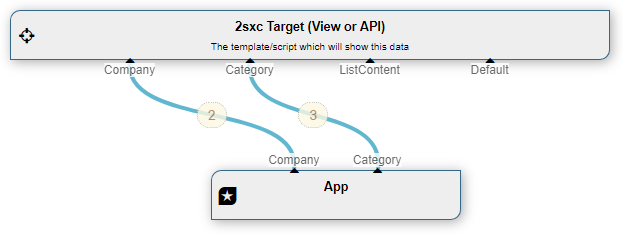

All DataSource Objects in 2sxc / EAV
2sxc provides a large set of DataSource objects which either get data from somewhere (SQL, CSV, ...) or modify data on the In and passing it to Out. This page will give you an overview and link you to further sources if you need to know more.
How to use
Many data-sources are simply used in the Visual Query, and if all you want is visual-query, then this reference will give you an overview regarding what things are possible. It will usually look like this:

If on the other hand you want to program with these DataSource objects, then it will usually look a bit like this:
An example code
// A source which can filter by Content-Type (EntityType)
var allAuthors = CreateSource<EntityTypeFilter>();
allAuthors.TypeName = "Author";
// Sort by FullName
var sortedAuthors = CreateSource<ValueSort>(allAuthors);
sortedAuthors.Attributes = "FullName";
The previous example creates an initial source allAuthors which has all data on the in, then filters to only provide those of type Author to the out. This is then piped to the sortedAuthors, which sorts on the Attributes field.
Understanding Data-Flow and Configuration
This is explained in the DataSource documentation.
All Public DataSources
These are all the data sources which are either provided in the default installation of 2sxc, or which are available for you to install (manually).
| Data Source | Purpose | Description & Details |
| App | Organize |
Provides each content-type on the out-stream (...)Provides each content-type on the out-stream, so that you can useds["any-type-name"] as if there was a table for each type.
|
| AttributeFilter | Modify |
Removes properties on the entities (...)Removes properties on the entities, typically before you stream it to JSON, so that only the fields you want are transmitted. |
| AttributeRename | Modify |
Renames properties on the entities...Renames properties on the entities and optionally removes the remaining ones. |
| BaseCache | (internal) |
Base class (...)The base class for all system caches (QuickCache, FarmCache, etc.) |
| BaseDataSource | (internal) |
Base class (...)This is just a base class. |
| CacheAllStreams | Caching |
Cache all streams passing through (...)Every stream on this "In" are also available on the "Out" but cached a certain amount of time or till the upstream source is invalidated. |
| ContentTypeFilter EntityTypeFilter | Filter |
Only items of a specific content-type (...)Returns only items which are of a certain content-type.Note: was previously called EntityTypeFilter. |
| CsvDataSource | Get Data |
Get data from a CSV-file (...)Lets you read a CSV file and provide the data as Entities for further use.not well documented yet, see code here |
| DataTable DataSource | Get Data |
Base class for coding only (...)Lets you convert a .net DataTable object into a DataSource. This is great for when you find it easier to generate a DataTable, and this will auto-provide it as a stream. |
| Deferred Pipeline Query | (internal) |
Internal object to optimize performance (...)This is used internally, because it will auto-generate an entire query-pipeline from configuration and query it, but only if accessed.ToSic.Eav.DataSources.DeferredPipelineQuery Deferred Pipeline Query code |
| Dnn FormAndList | Get Data |
Use old FnL data in 2sxc (...)Will let you access Form-And-List aka UDT (Universal Data Table) data.ToSic.SexyContent.Environment.Dnn7. Dnn FormAndList code |
| DnnSql DataSource | Get Data |
DNN Sql DataSource (...)Sql which only uses the DNN DB and nothing else, based on the Sql DataSource |
| DnnUserProfile DataSource | Get Data |
Get DNN Users and profiles (...)Get DNN users and profiles to create user directories, details-pages etc.ToSic.SexyContent.Environment.Dnn7.
|
| ExternalData DataSource | (internal) |
Base Class for external data DataSources (...)This is a base-class for all kinds of external data sources (like Csv…) because it provides more information related to enabling cachning etc.ToSic.Eav.DataSources.ExternalDataDataSource ExternalData DataSource code |
| ItemIdFilter EntityIdFilter | Filter |
One or more items with an Id (...)Return only 0, 1 or more items which fit the IDs in the string provided.Previously named EntityIdFilter |
| ItemFilterDuplicates | Logic |
Find and remove OR retrieve duplicate items (...)Use this to remove duplicates or just find them (or both) |
| Module-Instance DataSource | Get Data |
Get current modules data (...)Will get the content-items assigned to a DNN-Module. This is used internally on each view, but can also be used when using module-data to configure a query. |
| OwnerFilter | Filter |
Only items which are "owned" by a user (...)Returns only items which are "owned" = created by a specific person. Great for tools where the users have their own data / registrations which they can still modify. |
| Paging | Logic |
Page through items (...)Returns only a specific amount of items after skiping another amount; also provides a stream telling you how many items / pages are in the stream, to let you assemble a pager UI element |
| PassThrough | (internal) |
Do-Nothing DataSource (...)This data source doesn't actually do anything - it just lets the data on the in to the out. For (internal) and testing stuff. |
| PublishingFilter | Filter |
Filters items the current user shouldn't see (...)This is part of the "Unpublished-Data" concept. Since each item could be either published or draft, this helps you show the correct ones for the current user based on his edit-rights. It's automatically in the default pipeline, unless you explicitly don't want it. |
| QuickCache | (internal) |
Internal cache class (...)The quick and simple cache used by default internally.ToSic.Eav.DataSources.Caches.QuickCache QuickCache code |
| RelationshipFilter | Filter |
Filter items which have a relationship (...)This helps you find items which are related to another item - like "All Books by Author Daniel Mettler"New in 8.12: In-Stream "Fallback" which is returned if the filter didn't return any hits. |
| Sql | Get Data |
Get SQL data as entities (...)This lets you get data from any SQL data base. It also has powerful script-injection protection, so messy parameters won't hurt it. |
| Shuffle | Logic |
Shuffle/randomize item order (...)This source mixes up the order of the items, typically for things like "show 3 random quotes" |
| StreamFallback | Logic |
Returns the first in-stream with results (...)Use this to choose from multiple in-streams which data to show. It will use all the in-streams sorted A-Z, and return the first stream which can deliver data. The remaining streams will not be queried. |
| StreamMerge | Logic |
Merge all in-stream into 1 (...)Use this to merge multiple in-streams into one output stream. |
| StreamPick | Logic |
Pick a stream (...)Use this to pick one of multiple in-streams by name. Often used together with the token [Params:ShowDrafts] |
| ValueFilter | Filter |
Filters by value (...)Returns all items where a specified property matches the filter. Very powerfull, with filters like contains, between, etc.New in 8.12: In-Stream "Fallback" which is returned if the filter didn't return any hits. |
| ValueSort | Sort |
Sorts all items (...)Sorts the items in the stream asc/desc based on a property. |
| ViewDataSource | (internal) |
Internal class for view-handling (...)This is technically just the target of a pipeline, which is then routed to the Razor/Token View. Basically just does a full pass-through.ToSic.SexyContent.DataSources.ViewDataSource
|
Demo App and further links
You should find some code examples in this demo App
- ...
More links: Description of the feature on 2sxc docs
History
- Introduced in 2sxc ??.??